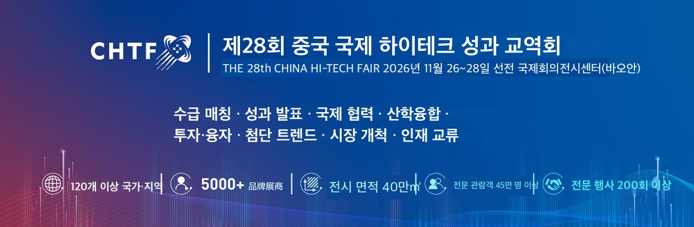
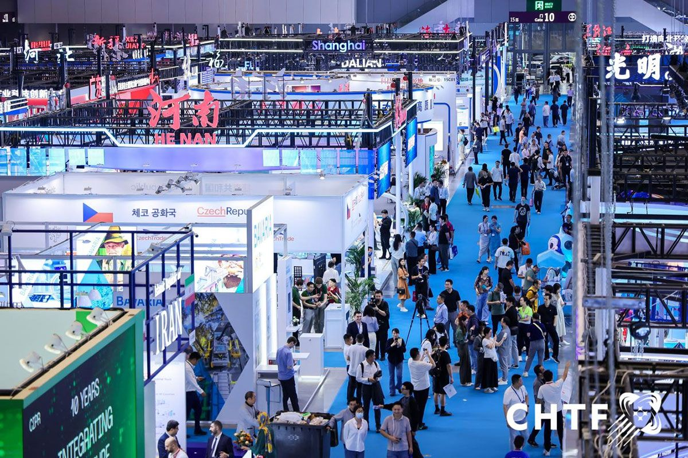
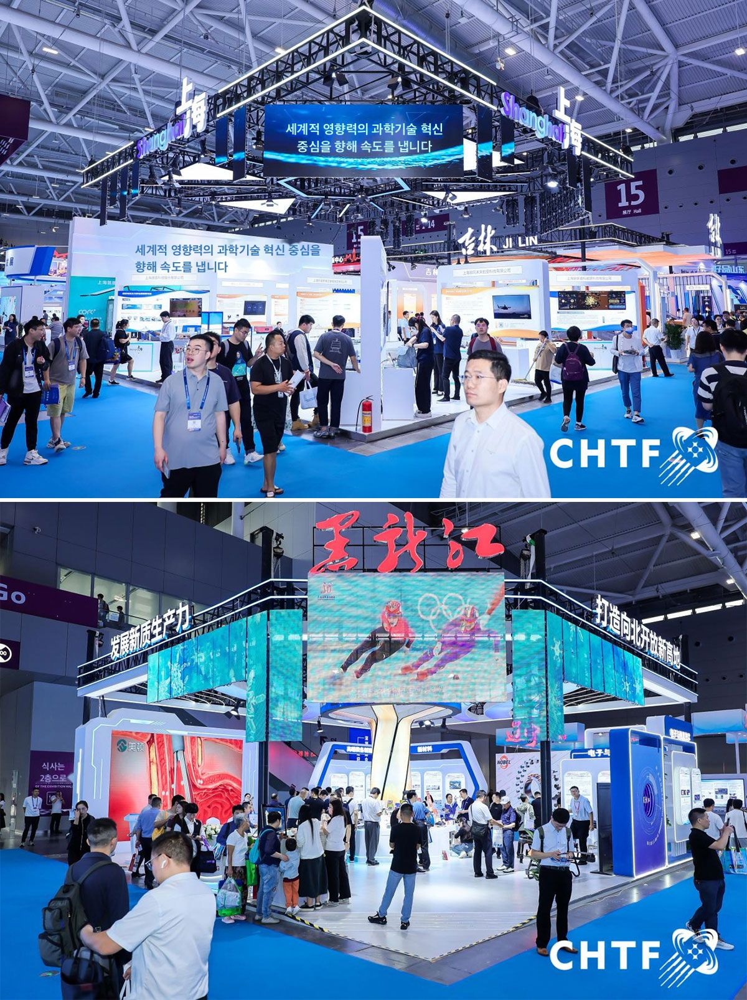

국제·성시 과학기술 성과전

전시 소개
제28회 고교회의 국제·성시 과학기술 성과 전시구역은 중국이 최근 중대 기술 과제 해결, 과학기술과 산업 혁신의 융합, 신업태·신모델 육성, 지역 여건에 맞는 신질 생산력 발전에서 거둔 최신 성과를 보여 줍니다. 국제·성시 공동관은 지역 혁신 역량의 대표로서 최신 제품, 연구 성과, 첨단기술을 선보입니다.
이번 전시는 과학기술 혁신과 산업 발전의 최전선에 초점을 맞춰 다층적인 국제 교류·협력의 장을 만듭니다. 핵심 구역에서는 AI, 바이오의약, 신에너지 등 전략 신흥 분야의 세계 첨단 기술과 제품을 소개합니다. '일대일로' 구역은 연선 국가와 지역의 특색 산업을 실물 전시, 멀티미디어 체험, 프로젝트 설명회로 소개하고 자원 공유와 산업 협력을 촉진합니다.

전시의 강점
(1) 세계 첨단 과학기술 발전과 국제 협력 촉진
고교회는 세계적 첨단기술 행사로서 하이테크의 최신 동향과 핵심 흐름을 보여 주고, 중요한 혁신 성과를 발표하며, 개방적인 국제 협력 플랫폼을 만듭니다. 기술 거래, 프로젝트 투자, 산업 협력을 통해 성과의 전환을 앞당깁니다.
(2) 신질 생산력 혁신 사례 집중, 첨단기술 성과의 사업화 촉진
고교회는 중국에서 가장 격이 높고 영향력 있는 과학기술 전시회입니다. 국가 중대 전략을 뒷받침하며 신질 생산력 발전과 혁신 생태계 구축의 성과를 보여 주고, 첨단기술 성과가 실제 생산력으로 이어지도록 돕습니다.
(3) 지역 혁신 협력 촉진, 과학기술과 산업 혁신의 융합
고교회는 산업·기술·혁신의 풍향계로서 지역과 부처를 넘어 과학기술 역량과 자원을 모으고, 지역 혁신 협력과 산업 융합을 이끕니다.

지난 성과
제27회 고교회에는 상하이, 톈진, 광둥, 장시, 후베이, 헤이룽장 등 여러 지역 공동관이 참가해 공동관 소속 기업이 1,500곳을 넘어 역대 최다를 기록했습니다. 헤이룽장 공동관은 400여 명, 허난·장시·구이저우 공동관은 각각 300명 이상이 참가했고, 과학기술 성과 공동관은 120여 개에 달했습니다.
해외에서는 미국, 프랑스, 한국, EU, 호주, 캐나다, 덴마크 등 30여 개 국가와 국제기구가 단체로 참가해 세계 선도 기술과 혁신 제품을 선보였습니다.
